Unity インストール
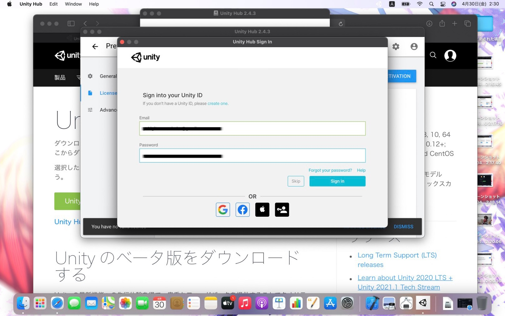
UnityIDのメールアドレスとパスワードを入力します。
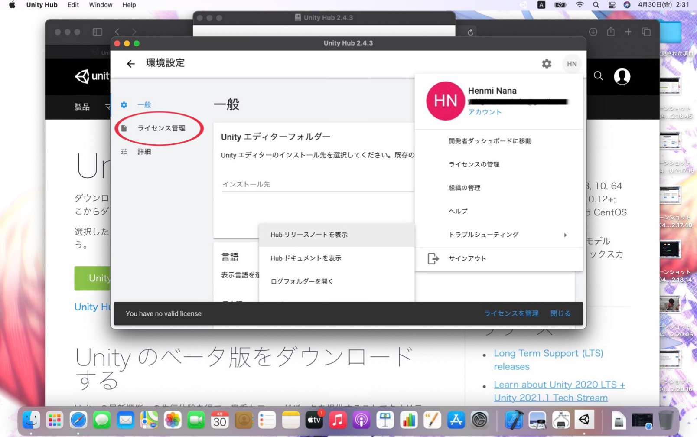
アカウントに入ったらライセンス管理に移動します。
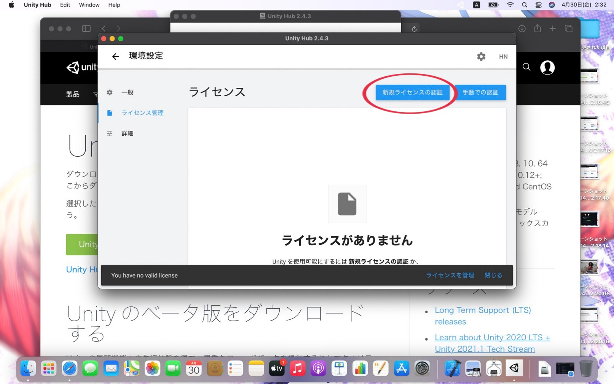
ライセンス管理に移動したら、新規ライセンスの承認をクリックします。
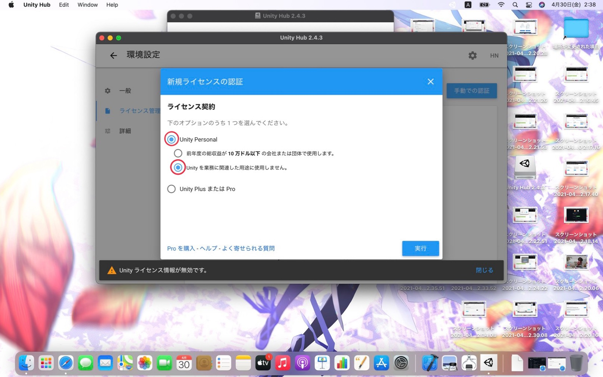
上の画像の通りに、Unity PersonalとUnityを業務に関連した用途に使用しませんを選択し、実行を押します。
※自分の使用目的によっては選択する場所が違うので注意してください。
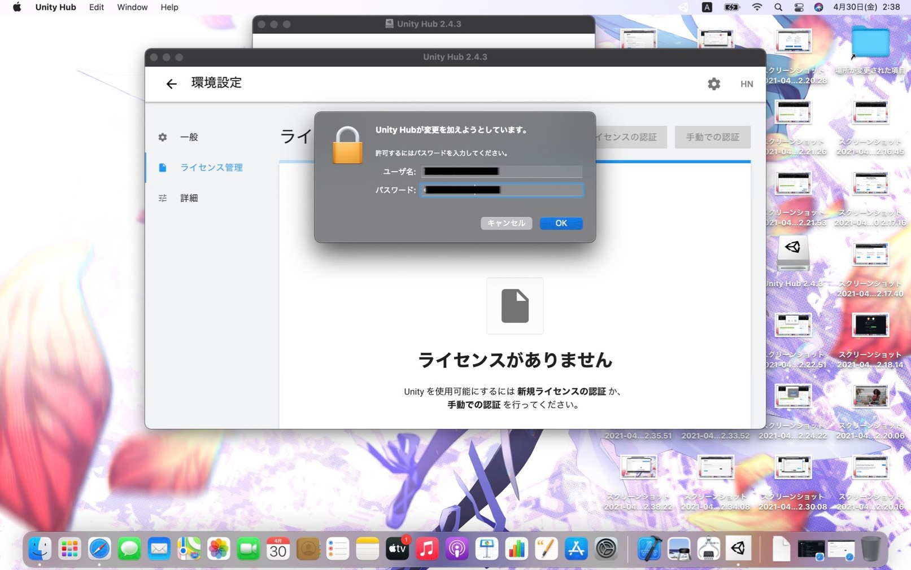
実行を押すとこのような表示がでてきます。
ここでは、自分のPCのユーザー名とパスワードを入力します。
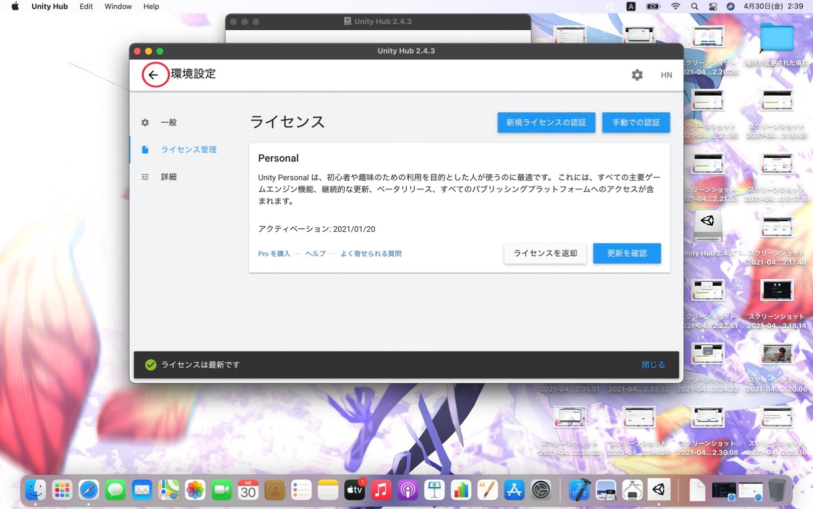
次に、環境設定から移動します。
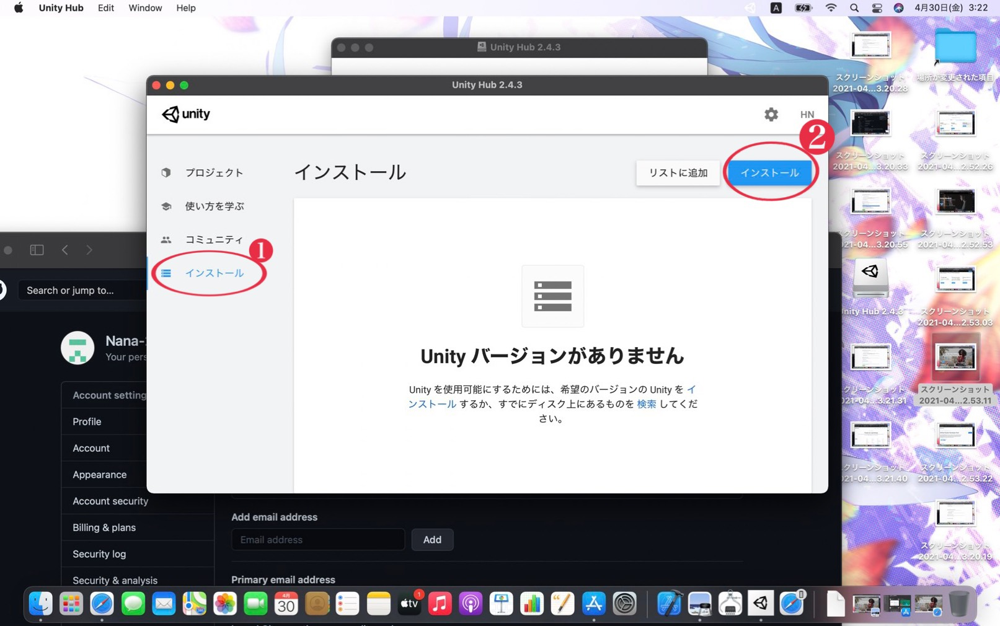
環境設定から移動したら、インストール画面からインストールボタンをクリックします。
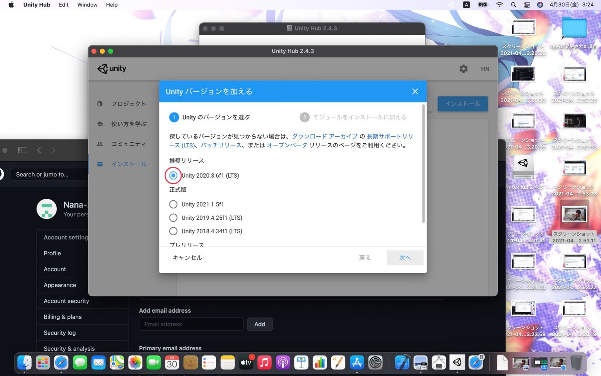
上の画像の通りに、Unityのバージョンを選び、次へを押します。
今回は推奨リリースされているバージョンをインストールします。
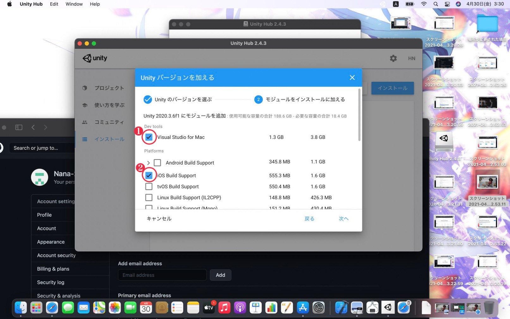
インストールするバージョンにモジュールを追加します。
Visual Studio for MacとiOS Build Supportを選択して次へを押します。
※Visual Studioを既にインストールしている方は、iOS Build Supportだけで大丈夫です。
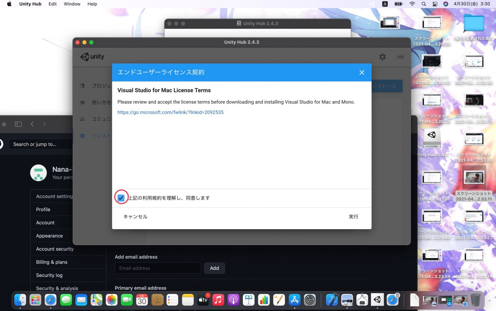
上記の利用規約を理解し、同意しますを押します。
ライセンスが許諾されたら正常です。
プロジェクトの作成
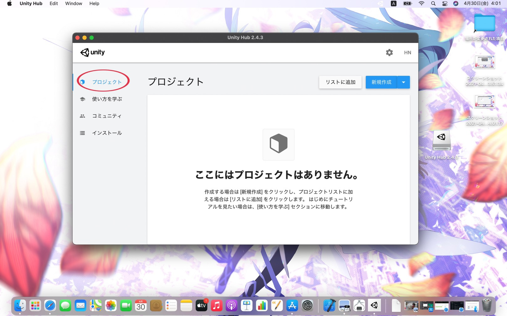
プロジェクトに移動します。
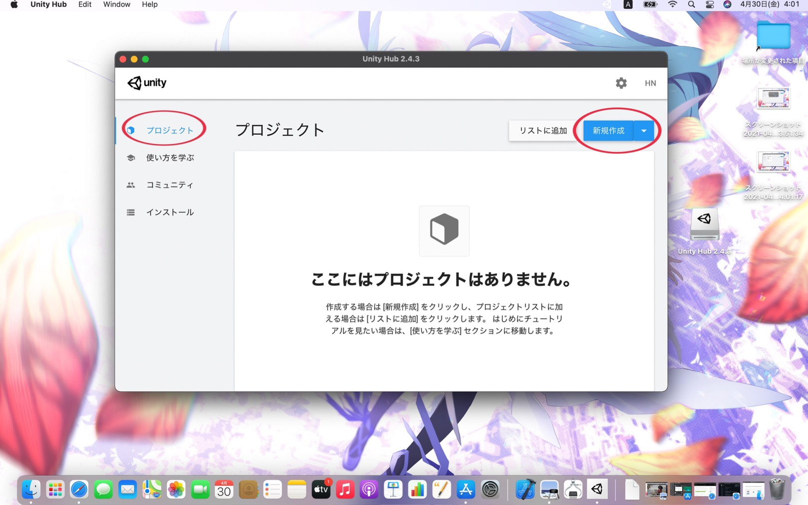
新規作成をクリックします。
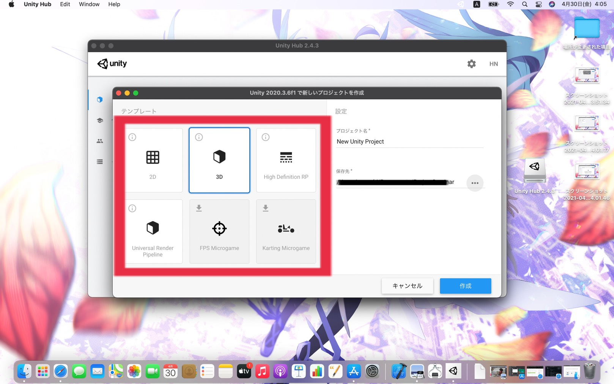
自分が作りたいゲームのテンプレート(3Dや2Dなど)を選択し、プロジェクト名を付けます。
保存場所を設定したら、作成ボタンをクリックします。
今回は3Dのゲームを作ると仮定します。
※プロジェクト作成には時間がかかるので気長に待ってください。
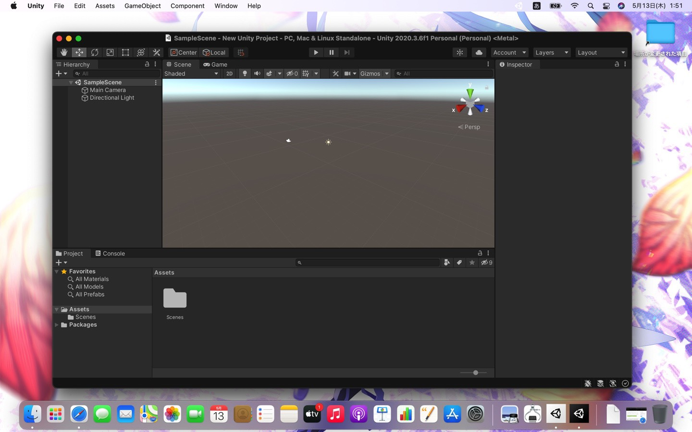
このような画面が表示されたらUnityのインストール完了です。